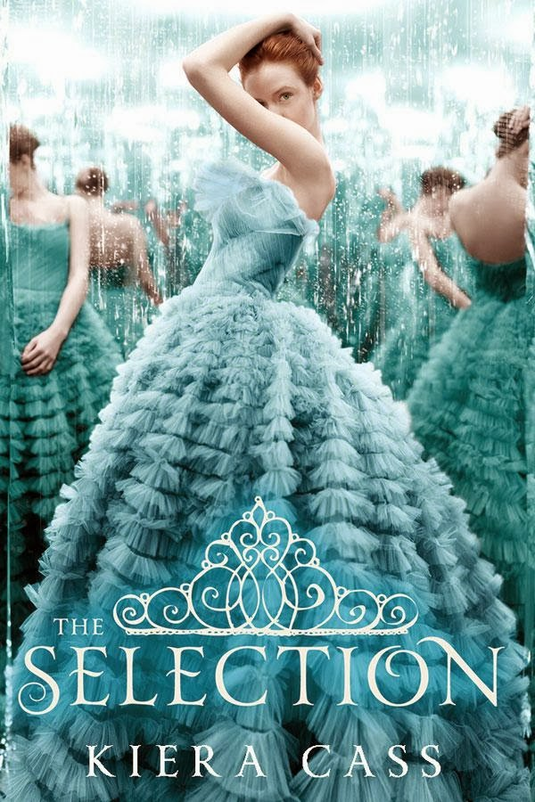
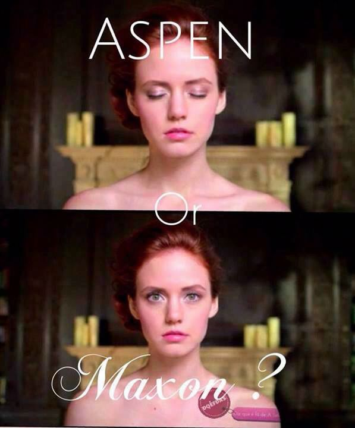
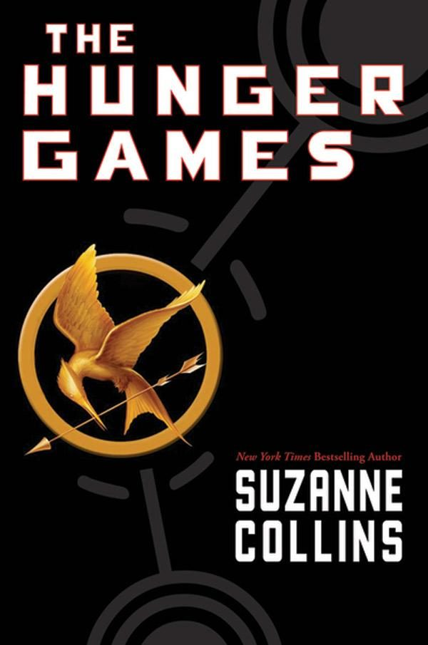
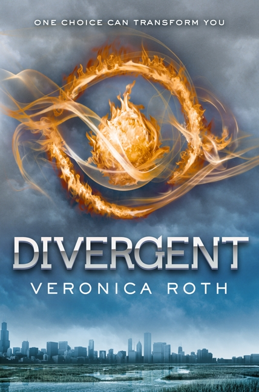
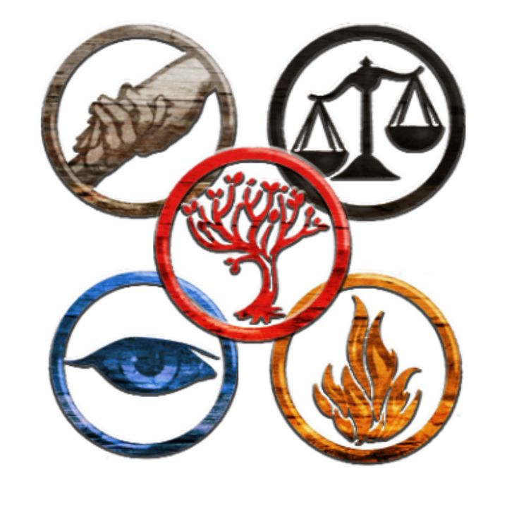
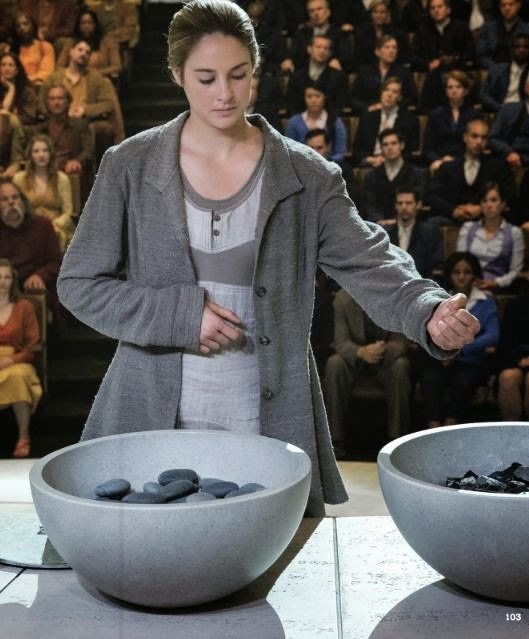
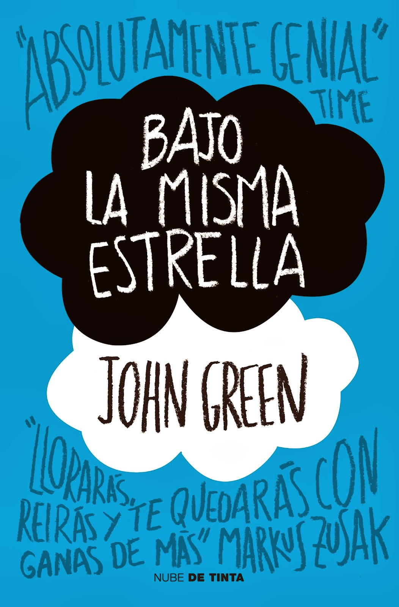
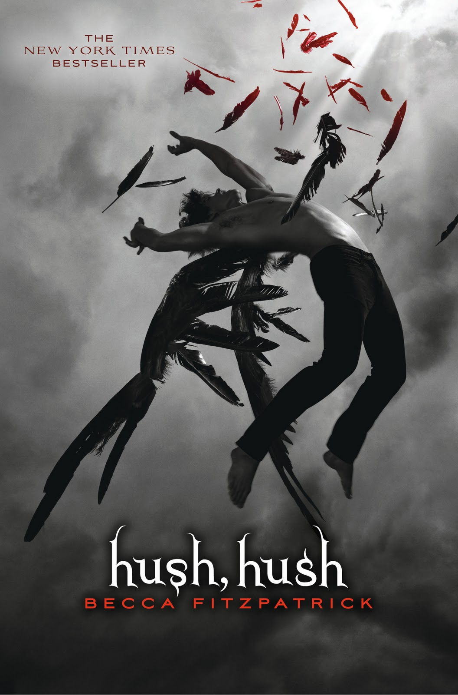
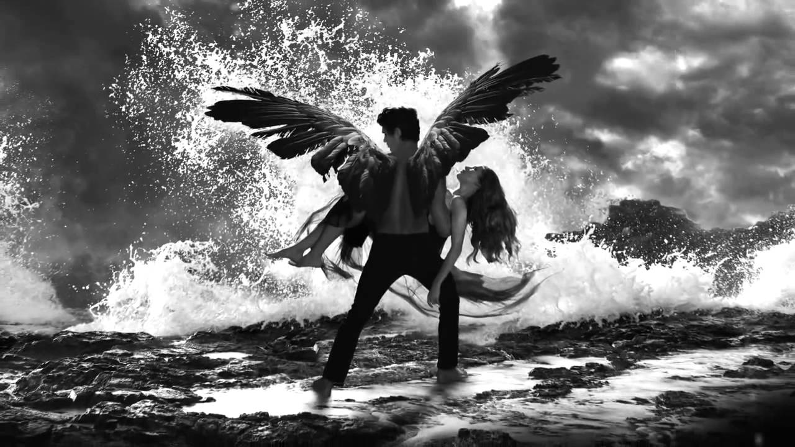
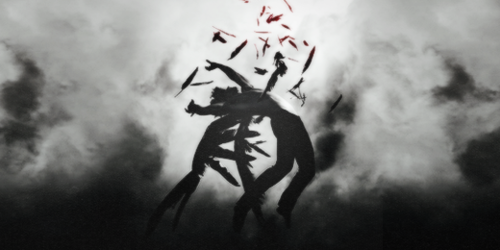

| RESEÑAS LITERARIAS |
| INICIO | JUVENIL | ROMANTICO | ;GENERAL |
La Selección es una novela de género romance/distópico para jóvenes adultos escrita por la autora Kiera Cass. Es el primer libro de la saga La Selección,
seguida por La Élite y La Elegida. Fue publicado el 26 de marzo del 2012.
Si te gustan los triángulos amorosos y las historias de príncipes y princesas, no lo pienses más.
Kiera Cass autora de esta increible historia, se graduó en Historia por la universidad de Radford. Creció en Carolina del Sur y en la actualidad vive
en Blacksburg, Virginia, con su familia.
|
Para treinta y cinco chicas, La Selección es una oportunidad que sólo se presenta una vez en la vida. La oportunidad de
escapar de la vida que les ha tocado por nacer en una determinada familia. La oportunidad de que las trasladen a un mundo
de trajes preciosos y joyas que no tienen precio. La oportunidad de vivir en un palacio y de competir por el corazón del guapísimo príncipe Maxon.
Sin embargo, para America Singer, ser seleccionada es una pesadilla porque significa alejarse de su amor secreto, Aspen, quien pertenece a una casta inferior a la de ella; y también abandonar su hogar para pelear por una corona que no desea y vivir en un palacio que está bajo la constante amenaza de ataques violentospor parte de los rebeldes. Es entonces cuando America conoce al príncipe Maxon. Poco a poco, se empieza los planes que ella había hecho para su futuro y se da cuenta que la vida con la que siempre soñó no se compara con el futuro que nuca se atrevió siquiera a imaginar. |
 |
| Esta historia se relata en el pueblo de Illéa, el cual sería Estados Unidos en un futuro, en este lugar se tiene la tradición de que el príncipe al cumplir la mayoría de edad debe esposarse con una chica que provenga de la misma nación. Para esto se realiza un concurso en donde solo son seleccionadas 35 de ellas para poder participar por el amor del guapísimo príncipe Maxon y ser llevadas al palacio durante el tiempo que dure el concurso. America Singer por cuestiones de la vida termina siendo una de las seleccionadas pero para sorpresa de todos, ella no está muy entusiasmada con la idea de participar, pues ella tiene un amor secreto con Aspen Leger quien pertenece a una casta inferior a la de ella, por lo que estar en el concurso le impedirá que estén juntos. Esto se vuelve más complicado cuando America conoce al príncipe y comienzan a tener una amistad, despertando en ella sentimientos que no imagino que podría desarrollar, todo es muy confuso para ella, no sabe lo que está sintiendo y constantemente se encuentra en terribles dudas sobre qué es lo que realmente quiere, cuando parece haber decidido ceder ante estos sentimientos un suceso vuelve a cambiarlo todo, Aspen por casualidades de la vida termina en el palacio rencontrándolo nuevamente con America. Todo esto provoca que America vuelva a dudar de sus sentimientos y se encuentre en un dilema entre su antiguo amor y el amor que acaba de descubrir por Maxon. |
|  |
Los juegos del hambre (título original en inglés: The Hunger Games) es el primer libro
de la trilogía homónima escrita por la autora estadounidense Suzanne Collins. La editorial
Scholastic Press lo publicó el 14 de septiembre de 2008. Se trata de una novela de aventura y ciencia ficción juvenil.
Suzanne Collins es autora de libros para niños y jóvenes y guionista de programas de televisión
juveniles. En esta primera entrega de una trilogía, nos brinda suspenso, ética, aventura y amor a partes iguales,
en un contexto situado en un futuro con inquietantes paralelismos con nuestro mundo actual.
|
un pasado de guerras ha dejado a los 12 distritos que dividen Panem bajo el poder tiránico
del Capitolio. Sin libertad en la pobreza, nadie puede salir de los límites de su distrito.
sólo una chica de 16 años, Katniss Everdeen, osa desafiar las normas para conseguir comida. Sus principios se pondrán a prueba con "Los Juegos del Hambre", espectáculo televisado que el Capitolio organiza para humillar a la población. Cada año, dos representantes de cada distrito serán obligados a subsistir en un medio hostil y a luchar a muerte entre ellos hasta que quede un solo superviviente. Cuando su hermana pequeña es elegida para participar, Katniss no duda en ocupar su lugar, resuelta a demostrar con su actitud firme y decidida, que aun en las situaciones más desesperadas hay lugar para el amor y el respeto. Es la hora. No hay vuelta atrás. Los juegos van a comenzar. Los tributos deben salir a la Arena y.....luchar por sobrevivir. Ganar significa fama y riqueza, perder significa la muerte segura. |
 |
|
Hace años, de una tierra destrozada llamada Norteamérica surgió Panem, una ciudad formada por trece distritos
que rodean el Capitolio, centro neutral del país. Pero aunque el Capitolio llevó la paz y prosperidad, los trece
distritos se rebelaron con él. Doce de ellos fueron vencidos, y el decimotercero aniquilado. El Capitolio, para recordar
a los distritos supervivientes quién mandaba, creó los Juegos del Hambre, un cruel juego de supervivencia que se emite
por televisión y que todo el mundo está obligado a ver. En él, veinticuatro adolescentes de entre doce y dieciocho, un chico
y una chica por cada distrito, son elegidos al azar para participar en los juegos. El objetivo es sencillo: luchar a muerte
entre ellos, pues solo uno de los veinticuatro puede ganar. En este ambiente de opresión vive Katniss Everdeen, una chica de dieciséis años del distrito doce que caza fuera de los límites permitidos por el Capitolio para alimentar a su madre y a su hermana Prim, de doce años. Pero todo cambia cuando se celebra el sorteo de los Tributos y la pequeña Prim sale elegida. Katniss se ofrece sin dudarlo para ocupar su lugar, pero ella no ira sola pues el hombre elegido de su distrito es Peeta Mellark y pronto se encuentran en la Arena pero las cosas no únicamente es ir y pelear hasta que el último salga de este Reality sangriento, se necesita obtener el favor de los patrocinadores que serán los que les ayudarán con ciertas cosas cuando así ellos lo necesiten, pero Katniss no tiene esa paciencia y simpatia para poder conseguir dicho apoyo, siendo asi ayudada por Peeta a lograr el favor de los patrocinadores. Es asi como surge una alianza entre ambos para juntos luchar contra veintidos Tributos más. La cosa es que solo uno podrá sobrevivir y ambos lo saben sin embargo el hecho de que Peeta en el pasado ayudará a Katniss provoca que ella se sienta en deuda con el y no se le haga facil pensar en la idea de matarlo; por su parte Peeta es un chico muy noble y dulce que no podría hacerle algun daño a Katniss ademas de que esconde un pequeño secreto respecto a ella. Mientras que fuera de aquella arena Haymitch su mentor hará todo lo posible para mantenerlos a salvo y hacerlos llegar juntos hasta el final, aunque el sepa que despues de todo tendra que elegir entre uno de los dos. |
Divergente es la novela debut de la autora estadounidense Veronica Roth y es la primera entrega de
una trilogía. Ubicada en una distópica y futura Chicago, la novela ha sido comparada a causa de su
temática con sagas para jóvenes adultos como, por ejemplo, Los Juegos del Hambre. Roth reveló que la
idea para esta novela nació mientras ella estaba estudiando en la universidad.
Veronica Roth autora de esta increible historia, nació en Chicago el 19 de agosto de 1988 y desde muy joven
se sintió atraída por la literatura. Sus padres la animaron a ingresar en la prestigiosa Northwestern University, donde estudió escritura
creativa.
|
En el Chicago distópico en el que vive la joven Beatrice Prio, la sociedad está dividida en cinco facciones
cada una de ellas dedicada a cultivar una virtud completa: Verdad (los sinceros), Abnegación (los altruistas), Osadía (los valientes), Cordialidad (los pacíficos) y Erudición (los inteligentes). En una ceremonia anual, todos los chicos de dieciséis años deben decidir a que facción dedicarán el resto de sus vidas. Breatice tiene que elegir entre quedarse con su familia...y ser quien realmente es. Sabe que no puede tener ambas cosas. Así que toma una decisión que sorprenderá a todo el mundo, incluida ella. Una Elección que delimita quienés son tus amigos. Una Elección que define tus creencias. Una Elección que determina tus lealtades...para siempre Una Sola Elección Puede Transformarte. |
 |
|
La humanidad ha estado a punto de extinguirse a causa de una serie de terribles guerras. Por eso,
la sociedad creada al comienzo de la gran paz ha decidido agrupar a las personas en cinco facciones
que tratan de erradicar los males que les llevaron a la guerra. Quienes culpaban la agresividad, crearon
Cordialidad. Los que culpaban la ignorancia, se agruparon en Erudición. Contra el engaño surgió Verdad,
contra el egoísmo, Abnegación, y contra la cobardía, Osadía.
A los dieciséis años, cada individuo debe elegir si permanecer en la facción de sus padres y donde han crecido durante ese tiempo o cambiarse. Si se cambia, tendrán que renunciar a volver a ver a su familia y empezar una nueva vida lejos de todo lo que conocen hasta ahora. Tras la Ceremonia de Elección todos los chicos deben pasar por un proceso de iniciación en la facción que han elegido: el que no lo supere se quedará sin facción, convertido en un paria. La familia de Beatrice pertenece a Abnegación y, aunque ella valora mucho el modo de vida de su facción, no sabe si es lo suficientemente altruista como para dedicar su vida a los demás. La difícil elección de Beatrice marca el inicio de la saga, y la trama de Divergente se centrará en las pruebas de iniciación. Beatrice tendrá que ganarse su puesto en la facción que ha elegido y eso la llevará a competir contra sus compañeros; hará aliados y enemigos, y conocerá a alguien muy especial, una persona que jamás habría esperado encontrar y con quien descubre un nuevo sentimiento. |
|  |
Esta novela es la quinta obra de Green y fue publicada en 2012. La historia de la protagonista fue inspirada
por una chica a quien el autor conoció en 2009 y que murió a la edad de 16 años de cáncer. En 2014 se estrenó
una versión cinematográfica de la historia que, al igual que el libro, tuvo un éxito inmediato con la crítica y el público.
John Green autor de esta historia, nació en Indianápolis en 1977, y se graduó en lengua y literatura inglesa y
teologíca en el Kenyon Collage.Tras iniciar su carrera en el mundo editorial como crítico y editor, ha sido galardonado con el
Premio de Honor Printz y el Premio Edgar por sus diversas obras para el público juvenil.
|
A Hazel y a Gus les gustaría tener vidas más comunes. Algunos Dirían que no han nacido con estrella, que su mundo
es injusto. Ellos son sólo adolescentes, pero si algo les ha enseñado el cáncer que padecen es que no hay tiempo para
lamentaciones porque, nos guste o no, sólo existe el hoy y el ahora. Por ello, con la intención de hacer realidad el mayor
deseo de Hazel -conocer a su escritor favorito-, cruzarán juntos el Atlántico para vivir una aventura contrareloj, tan catártica
como desgarradora. Su destino: Amsterdam, el lugar donde reside el enigmático y malhumorado escritor, la única persona que tal vez
pueda ayudarles a ordenar las piezas del enorme rompecabezas del que forman parte...
Emotiva, irónica e inteligente. Una novela teñida de humor y tragedia que habla de nuestra capacidad para soñar incluso en las circustancias más difíciles. |
 |
|
A Hazel le gusta leer libros pretenciosos y ver telebasura, leer poesía y dormir además tiene la excusa de que es bueno para el cáncer
y le gustaría que sus pulmones funcionasen como unos pulmones normales. Su madre cree que está deprimida, así que empieza a ir a un grupo
de apoyo todos los miércoles. Aunque, en realidad, no hay nada más deprimente que un grupo en el que cada día la lista de compañeros por los
que rezar es más larga. Precisamente el día en el que conoció a Augustus Waters, fue el día en el que casi consiguió evitar quedarse viendo
un maratón de America’s Next Top Model.
Lo primero que pensó de Augustus Waters, fue que era muy guapo. Aunque con una personalidad tan arrolladora como la suya, su físico pronto pasó a segundo plano. Es carismático, hablador, divertido, le gustan las metáforas y filosofar, y siempre parece saber qué decir. Estaba en el grupo de apoyo acompañando a su amigo Isaac, aunque él también había tenido cáncer. Hazel leyó el libro favorito de Augustus, Augustus leyó el libro favorito de Hazel y lo demás, es historia. Aunque en este caso es una historia tan peculiar como sus protagonistas, que arranca cuando Gus trata de localizar al autor del libro favorito de Hazel y continúa mientras ambos intentan ignorar el fantasma de su enfermedad. Pues por una vez quieren sentirse libres de sentirse como esas personas miserables que todo el mundo piensa que son por su enfermedad. Es así como deciden viajar a Amsterdam en busca del escritor que tanto ha ayudado a Hazen a vivir y tener expectativas. En ese viaje ambos se decubriran y dejaran fluir sus sentimientos, sin pensar en todo lo que los rodea olvidándose de sus problemas por un momento. |
Hush, Hush es el primer tomo de la serie literaria del mismo nombre, escrito por la autora
estadounidense Becca Fitzpatrick. Se publicó el 13 de octubre de 2009. A partir de su publicación,
el libro se convirtió en best seller del New York Times. Ediciones B fue la editorial encargada de su publicación en España y en América Latina.
Becca Fitzpatrick. se graduó en Ciencias de la Salud, especialidad que abandonó muy pronto para ponerse
a escribir. Cuando no está escribiendo, lo más probable es que esté corriendo, merodeando por las tiendas de rebajas o viendo
series de detectives. Hush Hush es su primera novela.
|
Enamorarse no formaba parte de los planes de Nora Grey. Nunca se había sentido especialmente atraída por sus compañeros de instituto, a pesar de
los esfuerzos de su mejor amiga, Vee, para encontrarle una pareja. Así era hasta la llegada de Patch. Con su sonrisa fácil y sus ojos
que parecen ver en su interior, Nora se siente encandilada por él a pesar de sí misma. Tras una serie de encuentros aterradores, Nora no sabe en quién confiar. Patch aparece allí donde va y parece saber más sobre ella que su mejor amiga. Imposible decidir si debe darse por vencida y sucumbir a sus encantos, o salir huyendo y esconderse. Y cuando intenta encontrar algunas respuestas, descubre una verdad que es más perturbadora que nada de lo que Patch le hace sentir. Porque Nora está en medio de una ancestral batalla entre los inmortales y los que han caído, y cuando se trata de escoger bando, la elección equivocada puede costarte la vida. Un Juramento Sagrado Un Ángel Caído Un Amor Prohibido |
 |
|
El inicio de curso no podría haber empezado peor para Nora. Por si no fuera suficiente con que el profesor de biología
decida separarla de su mejor amiga, ¡encima le toca sentarse con el chico más extraño y siniestro de clase o del instituto entero!
Y hacer un trabajo con él, aunque no puede negar que Patch es realmente atractivo con esa mirada tan obscura y llena de secretos.
¿Podría ser peor? Parece que sí; en los últimos días se siente perseguida por un extraño con pasamontañas que al parecer trata de matarla o
intimidarla ella aún no sabe que es lo que realmente busca, esto le provoca más escalofríos que la presencia de Patch quien por cierto no
deja de aparecer en escena cuando menos se lo espera.
Nora, después de haber hecho lo imposible por cambiar de compañero acepta muy a su pesar a Patch, y poco a poco empieza a darse cuenta de que es un chico bastante más normal de lo esperado, pero que esconde algún que otro secreto. ¿Podría ser él el extraño que le sigue a todas partes? O ¿podrá esconder algo más? Nora comienza a pasar por crisis de dudas e intriga por saber quién es el tipo que la acosa y aunque sabe que puede ser una gran opción se niega a creer que Patch pueda ser esa persona, porque al parecer está teniendo fuertes sentimientos por él. |
|  |